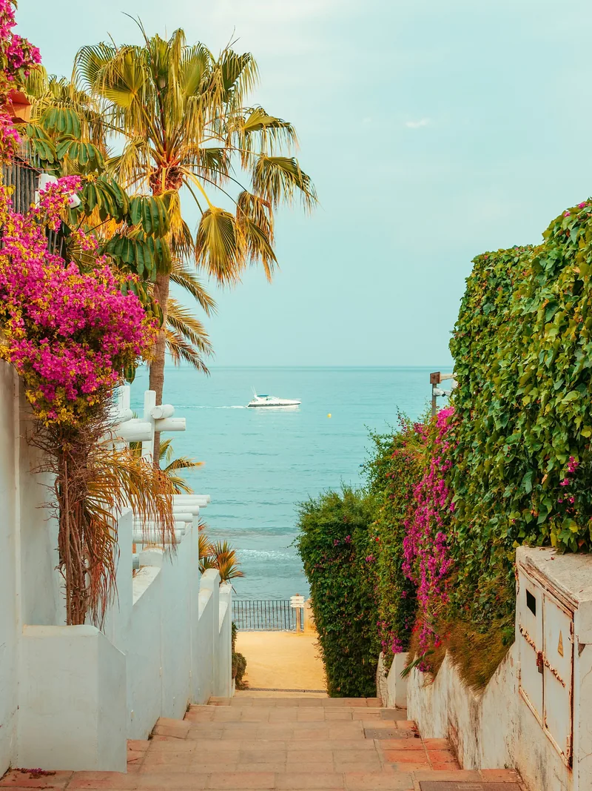

Andorra’s longer border is the one with Spain, about 64 km of it, and it’s the side most people use. Of the 9.6 million crossings in and out of the country in 2024, about 7 million went through the Spanish customs post at La Farga de Moles. Yet Andorra isn’t, and never has been, part of Spain. This is how the two fit together, what you’ll find just across the line, and a map of the food worth crossing it for.
Is Andorra part of Spain?
No. Andorra has been a country in its own right since 1278, when the Bishop of Urgell and the Count of Foix agreed to share it. The bishop’s half has never changed hands, and his seat is still the cathedral in La Seu d’Urgell, a Spanish town about 20 minutes’ drive from Andorra la Vella. So one of Andorra’s two heads of state lives in Spain, while the other, since the French kings inherited the Count of Foix’s rights, is the President of France. The full story is in our short history of Andorra.
The ties to Spain run deep all the same. Spanish nationals are by far the largest foreign community, 21,225 people in July 2026, and Spanish is heard everywhere alongside Catalan, the official language. Spain’s post office, Correos, runs one of Andorra’s two postal services, alongside France’s La Poste, and the Spanish school system teaches 3,161 of the country’s pupils in 2026–27. For the wider picture, see Andorra’s neighbours and Andorra’s population.
Crossing the border
There’s only one border control between the two countries. The CG-1 runs south from Andorra la Vella through Sant Julià de Lòria and crosses the Runer river into Spain, where it becomes the N-145 to La Seu d’Urgell. Andorran customs sit at the Riu Runer bridge and the Spanish post is just beyond it, at La Farga de Moles. There’s no railway.
Because Andorra is outside the EU and the Schengen area, this is a proper frontier. Carry your passport, and expect Spanish customs to stop some cars: tobacco, alcohol and perfume are much cheaper in Andorra, and the allowances you can take back are set out in what to buy in Andorra. The rules for each passport are in our visas and entry guide.
The queues are worth planning round. At the start and end of long weekends and holidays, Alto reported tailbacks of two to four kilometres on the CG-1 in 2026, so if you can, cross early in the morning or avoid the last afternoon of a holiday.
Two oddities complete the picture. Os de Civís, a Spanish village above Sant Julià, can only be reached by road through Andorra. And in summer a mountain road climbs from La Massana to the Port de Cabús, at 2,328 m, and drops into the Spanish valley of Alins; it’s paved on the Andorran side but not on the Spanish one, usually opens only from May to October, and is no road for a hire car.
Just across: La Seu d’Urgell and the Cerdanya
La Seu d’Urgell, with about 12,800 people, is the first town you reach and the easiest half day out of Andorra. Its cathedral of Santa Maria is the bishop’s seat, and the little church of Sant Miquel beside it dates from 1035. Its market has been held on Tuesdays and Saturdays since at least 1029. On the edge of town, the Segre Olympic Park was built for the canoe slalom at the 1992 Barcelona Olympics and is still used for rafting and kayaking. The Andorra–La Seu airport is just to the west; see airports for Andorra.
East along the N-260, the wide, sunny Cerdanya valley has Bellver, Puigcerdà and Llívia, a Spanish town completely surrounded by France. The valley’s markets are in our guide to markets over the border, and further afield there’s Barcelona, about three hours by road: see Andorra to Barcelona and day trips from Andorra.
Spain on a plate
Andorra’s own cooking is mountain Catalan: escudella, trinxat, grilled meats and snails, with pa amb tomàquet on the side (see traditional Andorran food). Spain beyond the Pyrenees is a different table in every region. Here’s the food each of its main regions is best known for.
Choose a region on the map to read about its food.
- Galicia Galician beef, from Ternera Gallega veal to steaks from older cows, grilled over hot coals. Then there’s pulpo á feira, octopus cut onto wooden plates with olive oil, salt and paprika, as it’s sold at the region’s fairs.
- Asturias Sidra natural, the cloudy, still cider of the region, poured from above the head into a wide glass to bring it to life, and fabada, a slow stew of large white beans with chorizo, morcilla and pork.
- Cantabria Anchovies from the Bay of Biscay, cured in salt and packed in olive oil in Santoña.
- Basque Country In San Sebastián, pintxos, small bites on bread or skewers, line the bars of the Old Town, and the burnt Basque cheesecake was first baked at La Viña, one of those bars, in the late 1980s.
- La Rioja Spain’s best known red wine region, built mostly on the Tempranillo grape.
- Castilla y León Cochinillo asado, roast suckling pig, carved at the table with the edge of a plate in Segovia, and morcilla, the black pudding made with rice, in Burgos.
- Aragón Ternasco de Aragón, young lamb with its own protected name, roasted slowly with garlic and herbs.
- Catalonia Cava, the sparkling wine of the Penedès, calçots, long sweet spring onions grilled black over a fire in late winter and dipped in a romesco style sauce, and pa amb tomàquet, bread rubbed with tomato and olive oil, with almost everything. It’s the region just over the border from Andorra.
- Madrid Churros con chocolate, the city’s favourite breakfast and late night snack, and cocido madrileño, a chickpea stew served in stages: the broth first, then the chickpeas, vegetables and meats.
- Castilla-La Mancha Manchego cheese from Manchega sheep’s milk, often served with membrillo, a firm quince paste, and saffron from the crocus fields.
- Extremadura Pimentón de la Vera, paprika made from red peppers dried over oak smoke, and ham from the acorn fed pigs of the dehesa.
- Valencia The original paella valenciana is made with chicken, rabbit and green beans. Along the coast, the rice is cooked with prawns and other seafood instead, as paella de marisco or arròs a banda, made with fish stock.
- Andalucía The tapa is a way of life here, and in Granada a small plate often still comes free with every drink. Andalucía is also the home of sherry from Jerez, ham from Jabugo, salmorejo from Córdoba, Seville’s bitter oranges and most of Spain’s olive oil.
- Balearic Islands The ensaïmada, a coiled pastry made with pork lard, and sobrassada, a soft paprika sausage, from Mallorca.
From Barcelona, the calçots of Valls and the cava cellars of the Penedès both make a good day out, and Spanish ham, cheese and oil are on every Andorran supermarket shelf; see grocery shopping in Andorra.

Checked November 2026 against the Andorra–Spain border and La Seu d’Urgell entries on Wikipedia, Alto’s reporting on border crossings, queues and school numbers, and Andorra’s Department of Statistics. The food map uses Natural Earth borders and es-atlas regions.